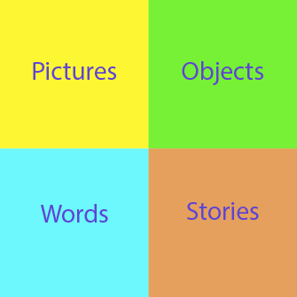

POWS Learning is a framework that tries to cover the main ways people learn: visually, verbally, kinesthetically and
holistically/contextual.
By turning these learning styles into practical words you get: Pictures, Objects, Words and Stories or POWS.

Pictures
Pictures are great for visual learners.
A picture POWS activity could demonstrate half of six using the bar model, this allows students to visually see a whole block containing six parts split in half.
Other picture activities could include: diagrams, photographs and illustrations.
Objects
Objects are great for kinesthetic learners.
An object POWS activity could demonstrate half of six using a pencil abacus, this allows students to physically split a block of beads into two equal parts.
Other object activities could include: multi-link, lego and sweets.
Words
Words are great for verbal learners.
A words POWS activity could demonstrate half of six by writing out the question in words and numbers.
Other word activities could include: discussions, videos and mind maps.
Stories
Stories are great for holistic learners.
A story POWS activity could demonstrate half of six using a real world example, such as two friends sharing a six slice pizza.
Other story activities could include: games, drama and field trips.